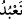

rabbaniyyeyi -ki o da, bu cüzlere lâyık olan ibâdeti telâkkî etmektir- istemiş olmasın.
Genelde bu böyledir. Nefis yüz çevirecek olursa onu te’dîb edecek uygun emirler de
vardır. Bunları bir araya getirmek için kul, Allah Teâlâ’ya şöyle hitab eder: “Namaz
kılarız, secde ederiz ve Sana koşarız ve Sana kulluk ederiz.” Bu tür hitablarla ilgili
olmak üzere zâhir âlimlerinden biri bana bir soru sordu. Kendisinin bu konunun içinden
çıkamadığını anlattı. Ben de ona bâzı cevaplar verdim. Bu cevaplardan biri buydu. Ve
adamcağız bu cevapla sıkıntıdan ve şaşkınlıktan kurtuldu.”
Bu âyette ibâdet, yalnız Allah Teâlâ’ya has kılınmıştır, çünkü ibâdet tâzimin son
noktasıdır. Bu yüzden Mun’im’den (nimet sâhibinden) başkasına ibâdet yaraşmaz.
Mün’im, faydalı olanı yaratarak ondan faydalanılacak hayatı bahşedendir. Nitekim
Allah Teâlâ buyurur: “Ey kâfirler! Siz ölürken sizi dirilten (dünyaya getirip hayat
veren)Allah’ı nasıl inkâr ediyorsunuz?” (el- Bakara, 2/28) “Yerde bulunanların
hepsini sizin için yaratan O’dur.” (el-Bakara, 2/29) Kulun halleri mâzî, hâl ve istikbâl
ile alâkalıdır. Mâzide kulu yokluktan; ölüm, acz ve cehlden, varlık, hayat, kudret ve
bilgiye ezelî kudretiyle nakleden O’dur. Şimdiki hâlde ise hâcet kapılarını açan ve
sebeblere bağlı olarak onları açık tutan Rahmân ve Rahîm olan Rab’dır. Gelecekte
kulları amelleriyle değerlendirecek olan din gününün sahibi, yine O’dur. Geçmiş, şu an
ve gelecek zamanda, kulların menfaatleri ancak Allah Teâlâ’ya dönmekle sağlıklı bir
düzene kavuşur. Bu yüzden O’ndan başka ibâdete lâyık hiçbir varlık yoktur.
“__WORD__” kelimesinin ibâdet veya ubûdet kökünden olması muhtemeldir. “İbâdet”
âbidlik, “ubûdet” kulluktur. Gafletsiz namaz, gıybetsiz oruç, minnetsiz sadaka,
gösterişsiz hac, riyâsız gazâ, eziyetsiz köle âzâdı, usanmadan zikir ve afetsiz diğer
tâatlar hep ibâdet türündendir. Husûmetsiz rızâ, şikâyetsiz sabır, şüphesiz yakîn,
kesiksiz şühûd, dönüşü olmayan yöneliş, fâsılasız vuslat, ubûdet sayılır.
Gazzâlî’nin el-Erbaîn adlı eserinde inanç esasları gibi ibâdet çeşitleri de on
kadardır.
İnanç Esasları şunlardır:
1. Celâl ve ikrâm sıfatlarıyla ezelî ve ebedî zâta inanmak. O’nun evvel, âhir, zâhir,
bâtın olduğunu bilmek. O’nun vücûdu (varlığı) ile evvel, sıfatlarıyla ve fiilleriyle âhır,
mükevvenat ve âlem-i şehâdetle zâhir; bilgi ve gayb îtibârıyla bâtın olduğunu idrâk,
2. Allah’ı zâtına yaraşmayan ve cemâline gölge düşürecek noksanlık ve kusurlardan
tenzih etmek,
3. Onun mümkinât âlemini kuşatan kudretine inanmak,
4. Bütün bir bilgiye sâhib olduğunu, bilinen ve bilinmesi gerekenleri kuşattığını kabûl
etmek. Allah’ın karanlık bir gecede siyah bir taşın üstünde siyah bir karıncanın
yürüyüşünü, hattâ ondan daha gizli olanları ve kalblerdeki duyguları ve gönüllerin
gizlediklerini bildiğine inanmak.
5. Kâinatın bütünüyle O’nun irâdesinde olduğuna inanmak. Mülk ve melekût
âlemlerinde cereyân eden herşey, Allah’ın hükmü ve dilemesiyle olur. Belirli vakitlerde